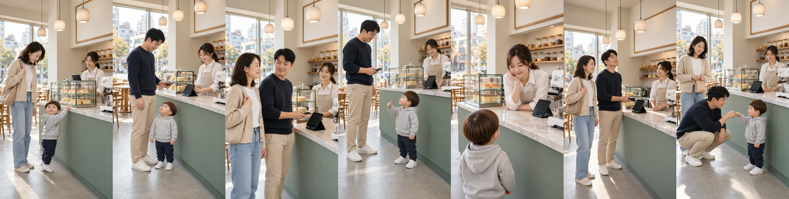

카페 «나이스!» 시작 그림 — 넓은 화면은 전원, 가까운 화면은 말하는 사람
doyoon-cafe-nice-001 · R11 · 2026-10-31 · 영상(H3)은 아직 안 찍었습니다
원인 — 컷마다 나오는 사람을 따로 정하면서(1번 아빠 없음, 2·4번 엄마 없음, 3·6번 도윤 없음) 화면은 전신이 다 보이는 넓은 크기로 뒀습니다. 그래서 같은 자리에서 사람이 나왔다 사라졌습니다.
바꾼 것
바꾼 것
- 넓은 화면 1·4·7번: 도윤·엄마·아빠·사장님 네 명 전원.
- 가까운 화면 2번 아빠 · 3·6번 엄마와 아빠(가슴 위) · 5번 사장님(도윤이 머리만) — 바닥이 안 보여 도윤이가 화면 아래에 있는 게 자연스럽게.
- 재발 방지: 넓은 화면(전신·무릎까지)인데 그 장소 사람이 빠지면 배치 검사가 막습니다(품질 장부 Q-20261031-01).
새 시작 그림 (1~7번)

이전 (R8 · 사람이 나왔다 사라짐)
